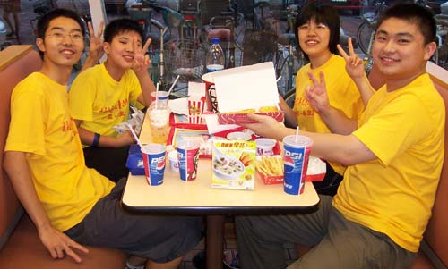

全少赛少年组北京豪取三冠
#1 全少赛少年组北京豪取三冠 作者：有志青年 发表时间：2007-8-10 8:18:40

上午进行的是第五轮的比赛，女子少年组邹沄率先走出，令人不解地与石家庄郑旭阳和棋，两人均五轮仅积3分，张萌森和男子组李一、孙羽浩相继宣胜，女子组形势渐趋明朗，最后两轮，张萌森的对手一弱一弃，最终5.5分当属正常，邹沄的两个对手不能轻视，蒋思雨的对手一队友一弱手，蒋与许会走观望和默契棋，很可能会丢卒保车，最后一轮邹沄与许梦婷一仗将成为赛点。
第六轮，芦海与孙羽浩的对局引人关注，最终芦海白棋占优进攻取胜，李一战胜江苏宁安文，张萌森轻取秦皇岛小朋友，邹沄意外负于天津张钟元，浙江蒋思雨战胜同城姐妹许梦婷，北京的两盘负局使最后一轮变得异常紧张。
大结局的第七轮，李一与前全国赛少年冠军浙江朱佳晨握手言和，以6.5分不败夺冠，张萌森与蒋思雨均以5胜1和1负积5.5分，张萌森以小分高出1分夺得冠军。这样，北京队获得了少年组男女双冠，同时，最好成绩的男女各两位选手组成的团体积分北京高出浙江1.5分，因此北京还将获得少年组团体冠军。
今天代表河北省队出战的秦皇岛藉选手徐嘉琦和刘昭均以全胜继续领先男女儿童组，明天还有一轮比赛，如果不出现意外，他们将确保冠军，浙江高林钦和那威俱乐部赵子轩是男子组前三名的有力争夺者，女子组第二、三名则要看最后一轮的争夺。
#2 Re:全少赛少年组北京豪取三冠 作者：逆刃 发表时间：2007-8-10 8:34:08
祝贺一下...